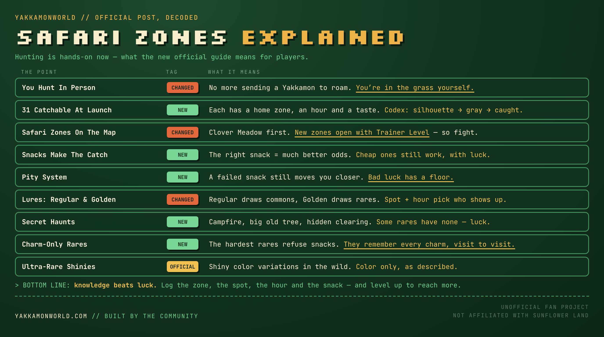

The official Safari Zones post is the team's second hunting guide, and it opens by admitting the first one is out of date: “a lot has changed during alpha testing.” What changed is who does the hunting. In September you sent a Yakkamon out to roam a ground while you ran the farm. In November you go yourself — into a zone you travel to from the Map, with snacks in your bag and a lure to set down.
The post is seven numbered points long and has no numbers in it beyond one: 31 catchable Yakkamon at Early Access launch. This article goes through each point, then puts the post next to everything else on record — the September Hunting guide, the official dex, the Contracts board and the November 3 dev chat — to show what moved, what it means for the way you will actually play, and what the post leaves open.

The seven points, in plain terms
| # | What the post says | New? |
|---|---|---|
| 1 | 31 catchable Yakkamon at Early Access launch. Each has a home zone, a time it is out and a taste of its own. A Codex shows each one as a silhouette until you have seen it and in grayscale until you have caught it. | New (the number, the Codex, “taste”) |
| 2 | Ultra-rare shinies — shiny color variations, found in the wild. | Confirms the October 14 stream in writing |
| 3 | Safari Zones. Hunting happens in dedicated zones you travel to from the Map, starting with Clover Meadow. New zones open as your Trainer Level rises, each with its own landscape and its own Yakkamon. | Changed (grounds were tiles on your Region) |
| 4 | Snacks. Spot a Yakkamon, throw it a snack. Each has favorites, and the right one gives a much better chance. Cheap snacks still work with more luck. A pity system means even a failed snack moves you closer to the catch. | New (favorites and pity); the snack itself was shown November 3 |
| 5 | Lures. Place one on the map and something walks up and starts feeding. A regular Lure draws commons; a Golden Lure brings out rares. The right spot at the right time of day decides who shows up. | Changed (lures used to pick a type) |
| 6 | Secret haunts. Some rares have a favorite spot — a campfire, a big old tree, a hidden clearing. Lay a lure there and they come. Others have no spot to learn, and need luck. | New |
| 7 | Some won't take a snack at all. The hardest rares only eat charms. You win their trust over time, and they remember every charm you have given them, even across several visits. | New |
The post closes with “Early Access is close” and an instruction to start planning your hunts. That is what the rest of this page is for.
What changed since the September Hunting post
Our reading of the September 5 Hunting post was built on its own summary line: every wild Yakkamon has a place, a time and a temperament. The new post keeps the first two and swaps the third — every catchable Yakkamon now has a home zone, a time and a taste. Side by side:
| Question | September 5 (Hunting post) | November (Safari Zones post) | Standing |
|---|---|---|---|
| Who hunts? | A Yakkamon you send to roam passively while you farm | You, in the grass, “more hands-on” | Replaced |
| Where? | Hunting grounds scattered across your own Regions | Dedicated Safari Zones reached from the Map, Clover Meadow first | Replaced |
| What opens more? | More tiles and more Regions | Trainer Level | Replaced |
| What decides the catch? | Temperament: win it over, pay it, or fight it | Taste: the right snack, with a pity system behind it | Reframed — temperaments are not mentioned |
| What do lures do? | Tilt the roll toward a type (streams) | Summon commons (regular) or rares (Golden), by spot and hour | Replaced |
| Time of day | Each ground changes with the in-game hour | Each Yakkamon has “a time it's out” | Kept |
| Grounds deplete | Yes — spread your hunts | Not mentioned | Unknown |
| Wild Legendaries | Appear sporadically in ordinary grounds | Not mentioned; the post speaks only of commons and rares | Unknown |
| Seasons | Rotate the hunting map | Not mentioned | Unknown (the Clock post still stands) |
The first row is the one that matters. September's hunt was the idle half of the game reaching into the wild: one more job on the list. November's hunt belongs to the active half. That fits the split the team has described since August — a farm that runs without you and a set of things that only move when you are playing — better than the old design did. It also settles a question we had flagged since September: whether a roaming hunter keeps rolling while you are logged out. If you are the one in the grass, it doesn't.
The rows marked unknown are not retractions. The post simply doesn't address them, and a guide that says a lot has changed is not a promise that everything else stayed. Until the team says more, we treat the three temperaments, depleting grounds and unannounced Legendaries as the September design, not as confirmed parts of the game you will log into.
Point 1: thirty-one, and where that number comes from
The September 17 stream said thirty Yakkamon were in the early-access build. The official dex then showed thirty-eight. The post's figure is thirty-one, and it is specifically the number you can catch.
There is one clean way to get from 38 to 31, and it is our arithmetic, not the team's: take the dex and remove the seven entries that have never been described as wild catches at launch — the six Genesis Yakkamon (Raigo, Ondi, Kova, Salu, Malandrix and Brazito, which exist as NFTs from the mint and the airdrop) and the unnamed Psychic Legendary at #056. What is left is all 25 Commons plus the six Rares outside the Genesis set: the Grass, Rock, Bug, Psychic, Spirit and Dark Rares. Twenty-five and six make thirty-one.
If that reading holds, three things follow. Every type the dex names except Dragon has at least one catchable species on day one. The six mystery Rares finally have a route into the game — and the post's Golden Lures, secret haunts and charm-only rares read like a description of exactly six hard targets. And no Legendary is in the launch hunting pool, which matches the docs putting the first NFT monster hunt at Chapter 0. If the reading is wrong, the likeliest reason is that Brazito or Malandrix is catchable and something else is not; the post does not list the thirty-one.
The Codex. Three states per entry: a silhouette you have never met, a grayscale picture you have seen but not caught, and the full entry. The November 3 dev chat showed this without naming it — Clover Meadow's four uncaught Yakkamon were drawn in gray. The September post framed “learning the clock” as a skill and gave you no table; the Codex does not hand you a table either, but it does tell you how much of the picture you are missing. A collection screen with thirty-one slots is also the first completion goal the game has published.
Point 2: shinies are official, and described as cosmetic
On the October 14 reveal stream the team said shinies and variations were being held back for hunting. The post is the first time that appears in an official guide, in one line: ultra-rare shiny color variations in the wild. The wording is about color. Nothing says a shiny has better stats, a different skill pool or its own rarity tier, and the team's standing rule is that rarity is fixed per species. Until told otherwise, treat a shiny as a trophy, not an upgrade. Whether shinies can be traded, and whether the pity system or lures affect the odds, is unpublished.
Point 3: Safari Zones, and why Trainer Level just got more important
In August the Regions post said a tile on your land could hold a hunting area, and September's post spoke of grounds scattered across your Regions. The Safari Zones post describes something else: dedicated places you travel to from the Map, each with its own landscape and its own Yakkamon. Clover Meadow is the first, and it is the meadow the November 3 dev chat walked into after the sixth farm expansion.
Two details need holding side by side. On November 3 the developer said that expansion opened “a hunting zone and a safari zone” — two names. The post uses only one. And on November 3 it was a farm expansion that opened the first zone, while the post says new zones open with Trainer Level. Both can be true: you expand far enough to reach the Map, and you level to open what comes after Clover Meadow. That is our reading.
The larger point is what Trainer Level now controls. Per the November 3 dev chat, it already sets how many Yakkamon you may put to work and the highest-level Yakkamon you may command, and it is earned by fighting — farm raids, the dojo, gym challenges. Add zones and one number gates all three parts of the game:
| What Trainer Level gates | Source |
|---|---|
| How many Yakkamon can work at once (the command cap) | Nov 3 dev chat |
| The highest-level Yakkamon you can command | Nov 3 dev chat |
| Which Safari Zones you can enter — and so which species you can catch | Safari Zones post |
A trainer who only wants to farm and collect cannot skip the fights. Collecting needs zones, zones need levels, levels need wins. It is a tidy loop — fight to level, level to reach new zones, catch new types there, and type locking turns those into new jobs on the farm — and it is the clearest sign yet that farming, hunting and battling are meant to be played together.
What the post does not say is whether a Safari Zone is yours alone or a place other trainers share, and what happened to the water hunting areas the Regions post attached to a Water Region. “Each with its own landscape” suggests the biomes survive as zones.
Point 4: snacks, and a pity system that changes the math
The catch itself is now simple to describe: see a Yakkamon, throw a snack. On November 3 the developer did exactly that with one “woody snack” and caught a Grass type first try, at what he called a very low percentage. The post explains the two things underneath.
Favorites. Each Yakkamon has snacks it prefers, and the right one makes a catch far more likely. That turns snack choice into knowledge you can write down: species, favorite, done. It also gives the workshop a new job. Snacks are crafted, so a hunter who knows what the target likes can make that snack on purpose and not carry a bag of everything.
Pity. A failed snack is not wasted; it moves you closer to the catch. A pity system is a floor under bad luck: keep trying and the catch eventually arrives. For players that means two things. Cheap snacks are a legitimate plan for commons, because persistence is guaranteed to pay. And the cost of any catch stops being a gamble and becomes a budget — at worst, some number of snacks. The post gives none of the numbers: how much each failure adds, whether progress is kept if the Yakkamon wanders off or you leave the zone, and whether it counts per individual or per species.
In September the same encounter was called affectionate, and what it judged was unknown. Snacks answer that for the ordinary case: it judges the snack.
Point 5: two lures, and placement is the skill
The streams described lures as type pickers — a rock lure for rock types. The post replaces that with two tiers. A regular Lure brings a common Yakkamon to you. A Golden Lure brings a rare. What decides which one is where you put it and when: “the right spot at the right time of day and you decide who shows up.”
So a lure is a summon, not a filter. You are not waiting to see what a zone offers; you are placing an order, and the address and the hour are the order form. That makes a zone a map to be learned square by square, and it means two trainers with the same lure will get different results depending on what they know. It also separates the two tools cleanly: the lure decides who arrives, the snack decides whether it stays.
The Golden Lure is the item to watch. It is the gate to every rare, and the post says nothing about where it comes from. Crafted from resources, it is a farm goal. Paid out by Contracts — which hand over “specific items you can't just gather or craft” — it ties the daily board to rare hunting. Sold for Coin or $FLOWER, it is a price on rares. We do not know which, and it is the first of our questions at the bottom.
Point 6: secret haunts make knowledge the scarce resource
Some rares have a favorite spot. The post names three examples — a campfire, a big old tree, a hidden clearing — and says a lure laid there will bring them. Others have no spot at all and come down to luck.
A haunt is a fact. Once one trainer finds it, every trainer can use it, because the clock is universal and (as far as the post implies) a zone looks the same for everyone. Expect the community to map the haunts within days of launch, and expect the hour to be the harder half to pin down. The rares without a haunt are the ones that will stay scarce, because no amount of shared knowledge shortens the wait.
This is also the first thing in any official post that rewards exploring a place with your own eyes. A hidden clearing is only hidden if the zone is big enough to have corners.
Point 7: charm-only rares, and where charms might come from
The hardest rares refuse snacks. They only eat charms, they have to be won over across visits, and they remember every charm you have given them. That is a long-form catch: progress that is saved, like the pity system, but paid in a different currency and spread over days.
The post does not say what a charm is or how you get one. The only other place the word has appeared is the November 3 dev chat, where the developer said common Yakkamon will not be traded one at a time: you gather a set number of one species and forge them into a charm, and the charm is what goes on the market. If that is the same charm — our reading, and an unconfirmed one — the design closes into a loop:
- You catch commons in bulk with cheap snacks and the pity system.
- You forge surplus commons into charms.
- You feed charms to the hardest rares, visit after visit, until they trust you.
Commons would then be the raw material for rares, and the charm market would be where a free-to-play hunter sells effort to a collector short on time. It would also answer something the Contracts post left hanging: what a duplicate common is for. If the two charms turn out to be different items, none of this holds, and we will say so here.
How it fits the current picture
| What is on record | What the Safari Zones post does to it |
|---|---|
| The official dex (Nov 9): 38 Yakkamon, 25 Common / 8 Rare / 5 Legendary | Gives the launch number — 31 catchable — and, on our arithmetic, a route in for the six non-Genesis Rares |
| Nov 3 dev chat: command cap, trainer XP from fighting, Clover Meadow, the woody snack, charms forged from commons | Confirms the meadow and the snack in writing; hangs zone access on Trainer Level; gives charms a second possible use |
| Contracts (Oct): a daily board asking for specific Yakkamon, on a deadline | Hands you the tools to fill it on purpose: Codex to know what exists, lure and hour to call it, snack to close |
| The Clock (Sep 11): one universal in-game clock | Unchanged and more important — the hour is now half of every lure placement |
| Battles (Sep 24): wild encounters and hunt battles; a beaten wild Yakkamon may be caught | Not mentioned. Whether anything in a Safari Zone fights you is open |
| Regions (Aug 28): a tile can hold a hunting area | Superseded for hunting: zones sit on the Map, not on your land |
| Docs: first NFT monster hunt at Chapter 0, a month after early access | Consistent. The 31 are the everyday hunt; the Legendary hunt is still the Chapter 0 event |
Put together, hunting has moved from a production line to a field sport. The farm produces without you; the hunt asks for your attention, your notes and your timing. And the post finally gives the collector a concrete target for launch: thirty-one entries, some of them shiny, six of them (on our count) hard.
What it means, by the kind of player you are
| If you are… | What changes for you |
|---|---|
| Free to play | Every one of the 31 is described as catchable by playing. Cheap snacks plus pity mean commons cost time, not money. Your edge is knowledge: favorites, spots and hours are free once learned. |
| A Genesis holder | Your NFT is not in the wild pool on our reading, so its supply is not diluted by hunting. But a Brazito is one worker; the types your farm needs come from Clover Meadow like everyone else's. |
| A farmer first | Hunting is no longer a job you can leave running. Budget active time for it, and expect to fight for Trainer Level whether you like battles or not. |
| A collector | The Codex is your checklist. Rares are a project measured in visits, not a lucky roll — plan around Golden Lures, haunts and charms. |
| A trader | Watch charms and Golden Lures. If charms are forged from commons and eaten by rares, they have steady demand; if Golden Lures can be traded, they price every rare. |
How to get an edge
- Start a hunting log on day one. Zone, spot, in-game hour, lure, snack, result. The post has turned every one of those into a variable you control.
- Catch for the farm first. The November 3 advice still holds: pick the type your jobs need. In the demo that was a Grass type for wood.
- Use cheap snacks on commons and let pity do the work. Save favorites for the species you actually want today.
- Don't spend a Golden Lure until you know a spot and an hour. Placement is the whole value of the item.
- Walk the zone. Campfires, old trees and clearings are the examples the team chose to print. Note every landmark before you need one.
- Take the fights. Trainer Level opens zones, raises your command cap and lets you command stronger Yakkamon. Nothing else in the game pays three ways.
- Keep your duplicate commons until the charm recipe is known. They may be worth more forged than handed in.
- Visit the stubborn ones on a schedule. Charm progress is remembered, so a little each session beats a lot once.
What's good here, and what to watch
- Good: bad luck has a floor. A pity system and remembered charms mean effort is never thrown away.
- Good: knowledge beats spending. Favorites, haunts and hours are information, and information is free to share.
- Good: the active half finally has an activity. Hunting was a menu assignment; now it is something you do.
- Watch: solved by day three. A universal clock and fixed haunts mean one good community map removes the discovery. The haunt-less rares and the shinies are what keep it interesting after that.
- Watch: the Golden Lure's source. Everything about rares depends on an item the post does not explain.
- Watch: time. A hands-on hunt, a daily Contract board and fights for Trainer Level are three active demands on top of a farm that was sold as idle.
- Watch: every number is missing. Catch rates, pity increments, lure costs, level thresholds for each zone, shiny odds.
The seven questions we'd put to the team
- Where do Golden Lures come from — crafting, Contracts, Coin or $FLOWER — and can they be traded?
- Is the charm a rare eats the same charm forged from common Yakkamon?
- Which 31 are catchable at launch, and are any Legendaries among them?
- How does pity count: per attempt, per individual or per species, and does it survive leaving the zone?
- Did the temperaments, depleting grounds and unannounced Legendaries from the September post survive alpha?
- Is a Safari Zone private or shared, and does the Yakkamon you bring matter at all?
- Is a shiny only a color, and can it be traded?
The first two decide what rare hunting costs. The fifth decides how much of our September article still applies.
What we changed on the site
The Hunting and Crafting, Snacks & Lures system pages are rewritten around this post, with the September design kept and labeled. The Trainer Level, Regions and Creature Collecting pages carry the new lines, the quick-reference table and the poster on the Gameplay page are updated, the Hunting FAQ has eight new questions and thirteen updated answers, and our September article now opens with a note on what this post replaces.
Read next
- Hunting: Safari Zones, Snacks & Lures — the system page, rebuilt around this post
- The Official Roster — the 38-entry dex the thirty-one are drawn from
- The November 3 Dev Chat, Graded — the command cap, trainer XP and the first catch shown live
- Wanted, Daily — the board that tells you which Yakkamon to go and find
- Every Wild Yakkamon Wants Something — the September design this post revises
- One World, One Clock — the hours every lure placement runs on